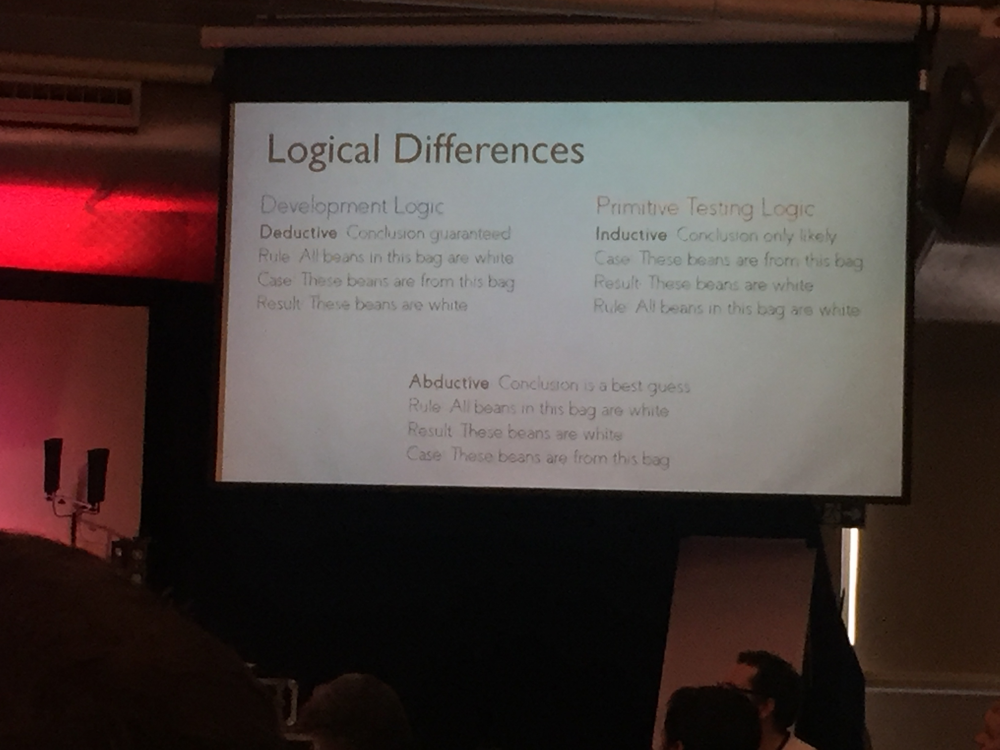

Remembering TestBash Brighton 2018
TestBash Brighton was one of 10,000 things I had to do in the weeks just before I left my whole life (family, friends, job, apartment, belongings) and moved across the ocean into the unknown. It was the first place I'd gotten to share the news in-person, with people who would become larger parts of my life once I moved here. Visiting the city where I'd studied during university and first thought "I could leave the United States" brought everything together for me.
I paired on presenting a brand-new workshop and talk, with two different people. This would have been a lot for me even without all the uncertaincies and distractions swirling in my life those days. After hustling to adjust the schedule of and present our morning workshop, I distinctly remember choosing to skip the afternoon one I'd planned on attending in order to fill out immigration and relocation paperwork. I'm shocked to find I was able to focus enough on some other peoples' talks to take coherent notes about them.
 Royal Pavilion in downtown Brighton
Royal Pavilion in downtown Brighton
Anusha Nirmalananthan's talk about sharing a chronic illness sticks with me today. One of the things I love to jump into is troubleshooting. I hear about a problem, and I'm already thinking of ways to solve it, and asking about what you've tried already. Anusha reminded us that listening and not saying anything can be more helpful and powerful than all the patronizing "Have you tried...?" in the world. I'm glad I have this top-of-mind before I start having 1-on-1 meetings with the members of the team I've just started leading this week.
Emily Weber spoke about communities of practice, which have always been billed as "guilds" in places where I've worked. Emily encouraged us to connect with people around our organizations in our discipline in a supportive, voluntary group without a hierarchy or an end date. While the occasional guild meeting has turned into a groan-fest, dedicating time and energy to fostering change (to code, to job descriptions, to your team's way of working) gives me that "I did something today" feeling. I'm grateful to be able to make time to learn with my colleagues, and build a support network for when I need advice from outside the bubble of my team.
I loved Rosie Hamilton's talk about logic in testing because it drove me back to the basics. How do we decide what is true? How do I describe my thought process? When the availability of relevant cases prevents effective inductive reasoning (determining a heuristic), we have to move to abductive reasoning (determining the likeliest explanation from the available information). Realizing when you're doing this and what other information might be available to you elevates your testing.

Looking back at my notes from Aaron Hodder's talk on structured exploratory testing make me realize how much freedom I can have in my testing when working with an inattentive team. His suggestions about making for easier reporting, fewer rabbit holes, and predictability of a time-table suggest that someone is really breathing down your neck about the status, progress, and depth of your work. The biggest advantage I've had in sharing my testing charters with my team is that I find out which ones aren't valuable before I spend time executing them. Actively choosing not to test something when we don't care about the outcome or the risk it poses is the best use of my time.
Alan Page spoke about the modern testing principles he'd been shaping on his podcast for a while. My notes boil it down to: testers should do less testing and more coaching. This has certainly served me on teams producing too much for me to personally go as deep as I'd like in testing, but it also pays off when I'm out of the office or unavailable at the office. Working on a team that knows how to test means I get to look at higher-quality code, with more interesting bugs.
Reflecting on the open space, the social events, and the atmosphere at TestBash Brighton 2018 makes me wish for the experience we all missed at the now-cancelled event in 2020. Jumping into the unknown seemed so doable when I knew there'd be so many people to share with and learn from on this side of the Atlantic. I don't know when I'll see you all again, but I look forward to that possibility.
Can't go to Britain without a proper tea

. \"Nobody Ever Gets Credit for Fixing Problems That Never Happened: Creating and Sustaining Process Improvement.\" Engineering Management Review, IEEE. 30. 64- 64. 10.1109/EMR.2002.1167285.")